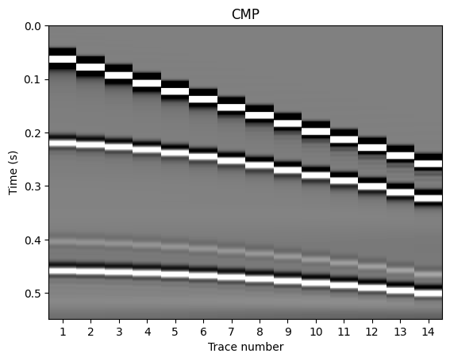

Processing CMP gathers#
import matplotlib.pyplot as plt
import numpy as np
import os
from scipy.interpolate import CubicSpline
import warnings
warnings.filterwarnings('ignore')
Reading (synthetic) CMP gathers#
# Import a synthetic CMP gather - it is already stored in a compressed Numpy format
data = np.load('../data/synthetic_cmp.npz')
list(data.keys())
['dt', 'offsets', 'CMP']
dt = data['dt']
dt
array(0.00045678)
offsets = data['offsets']
offsets
array([120, 180, 240, 300, 360, 420, 480, 540, 600, 660, 720, 780, 840,
900], dtype=int64)
cmp = data['CMP']
cmp
array([[ 0. , 0. , 0. , ..., 0. ,
0. , 0. ],
[ 0. , 0. , 0. , ..., 0. ,
0. , 0. ],
[ 0. , 0. , 0. , ..., 0. ,
0. , 0. ],
...,
[-0.01345723, -0.01386521, -0.01440551, ..., -0.02191424,
-0.02279523, -0.0239364 ],
[-0.01359077, -0.01399418, -0.01453609, ..., -0.02195092,
-0.02288917, -0.02406853],
[-0.01371918, -0.0141151 , -0.01465338, ..., -0.02195602,
-0.02296235, -0.02415405]])
num_vertical_samples = cmp.shape[0] # The number of data points on each trace
num_vertical_samples
1200
num_offsets = cmp.shape[1] # The number of traces
num_offsets
14
times = np.arange(num_vertical_samples)*dt # Time axis
times
array([0.00000000e+00, 4.56783920e-04, 9.13567839e-04, ...,
5.46770352e-01, 5.47227136e-01, 5.47683920e-01])
# Define a function to plot a CMP gather
def plot_cmp(cmp, num_offsets, num_vertical_samples, dt):
"""Plot a CMP gather"""
cutoff = 0.1
fig, ax = plt.subplots()
ax.imshow(cmp,
extent=[0.5, num_offsets + 0.5, dt*num_vertical_samples, 0],
aspect='auto',
cmap='gray',
vmin=-cutoff,
vmax=cutoff,
interpolation='none')
trace_numbers = list(range(1, num_offsets+1)) # For visual purposes
ax.set(title='CMP', xlabel='Trace number', ylabel='Time (s)', xticks=trace_numbers);
plot_cmp(cmp, num_offsets, num_vertical_samples, dt)

There are four reflections in the CMP gather. From top to bottom, they represent
The direct wave
The wave (strongly) reflected from the first interface
A multiple reflection on the first interface
The wave (strongly) reflected from the second interface
NMO correction#
# P-wave velocities and times of the two reflections
v1, t1 = 3800, 0.22
v2, t2 = 4800, 0.46